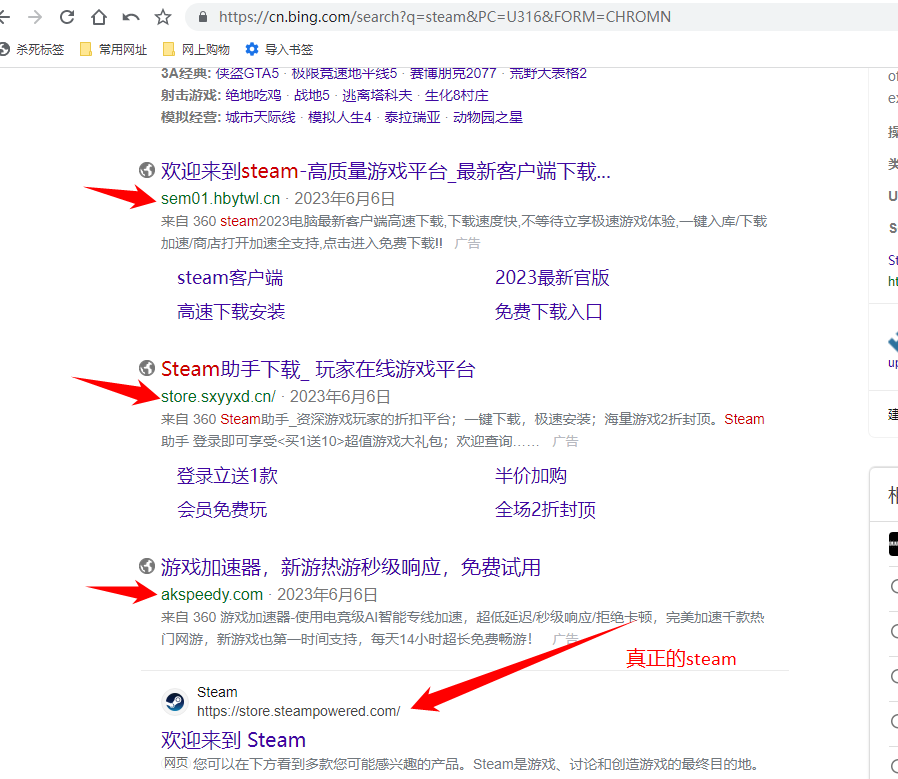
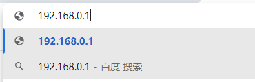
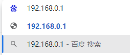
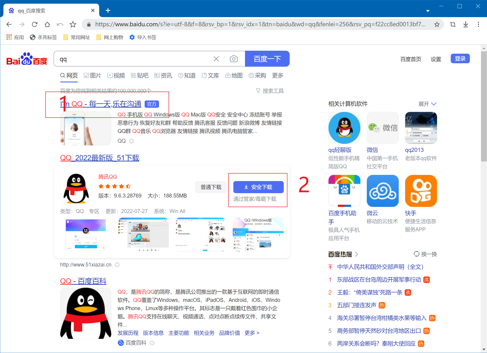
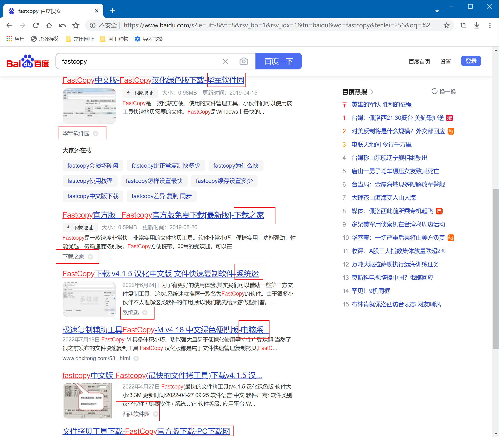
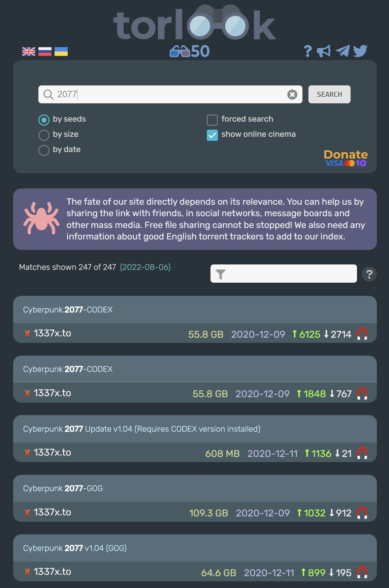

引入¶
前一页介绍的浏览器界面都非常简洁，大部分上网操作都是从地址栏开始的。
后退按钮： 返回之前浏览过的页面。重要提示： 点击标签页上的X是关闭当前标签页，并非后退操作。关闭标签页后，浏览历史通常无法恢复（除非重新打开标签页并点击历史记录）。前进按钮： 在点击了“后退”之后，用于重新访问后续浏览过的页面。刷新按钮： (通常位于地址栏右侧或按F5) 重新加载当前页面，获取最新内容。主页按钮： (可选显示) 一键返回设定的浏览器主页。- 地址栏 (URL 栏)： 浏览器的核心输入区域，用于：
- 输入网址 (URL)： 直接访问特定网站。URL 结构通常为：
协议://域名/路径?参数(如https://www.example.com/path/to/page?query=value)。 - 执行搜索： 直接在地址栏输入关键词，浏览器会使用默认搜索引擎进行搜索。
- 显示当前页面信息：
- 协议： 最左侧部分 (如
https://,http://)。https(带锁图标) 表示连接是加密的，更安全。http是未加密的。 - 域名： 地址栏中通常高亮显示的部分 (如
www.example.com)。这是网站的唯一身份标识。 - 路径： 域名后面的部分 (如
/path/to/page)，指示当前页面在网站中的位置。
- 协议： 最左侧部分 (如
书签/收藏按钮： 保存当前网址，方便以后快速访问。
域名¶

域名的作用：
- 唯一标识网站： 每个合法网站都有唯一的域名。
- 区分真假网站： 是识别广告网站、仿冒网站（钓鱼网站）的关键依据。
- 建立信任： 知名网站通常使用简洁、易记的官方域名。
如何识别？
- 仔细查看地址栏中高亮显示的部分，确认它是否与你预期访问的官方网站域名完全一致（包括子域名，如
www）。 - 如上图所示，只有最后一个结果 (
www.mi.com) 是小米的真正官网域名，其他都是广告、推广或非官方网站。
前提： 你需要知道目标网站的官方域名是什么。
搜索引擎的选择至关重要：
- 如果一个搜索引擎（尤其某些国内搜索引擎）返回的结果中充斥着广告、无法清晰辨别官网域名，或者根本找不到官网链接，强烈建议更换搜索引擎。优质的搜索结果应清晰标注“官网”或优先展示官方来源。
如何直接使用网址访问网页¶
场景： 你需要访问路由器管理后台，其地址通常是 http://192.168.2.1/ (具体地址请查看路由器背面标签或说明书)。
-
正确操作 (直接输入网址访问)： 
-
操作： 在地址栏直接输入
192.168.2.1或http://192.168.2.1并按回车。 -
结果： 浏览器会直接访问这个 IP 地址对应的本地网页（即你的路由器登录页面）。
-
错误操作 (使用搜索引擎搜索)： 
- 操作： 在地址栏或搜索引擎框中输入
192.168.2.1并按回车（或点击搜索按钮）。 - 结果： 搜索引擎会返回大量包含这个数字串的网页结果（通常是路由器设置教程、相关新闻等）。你无法通过这些链接直接访问到
192.168.2.1这个本地地址。
核心区别：
- 地址栏输入： 浏览器理解为“我要访问这个具体的网址”。
- 搜索引擎框输入： 搜索引擎理解为“我要搜索包含这些关键词的网页”。
为什么需要搜索引擎？搜索引擎如何使用？¶
为什么需要？
- 互联网上的网站浩如烟海，用户不可能记住所有需要的网址。
- 搜索引擎通过爬取和索引网页内容，帮助用户根据关键词快速找到相关信息。
如何使用？
- 基本操作： 在搜索引擎的输入框中输入描述你需求的关键词（如“如何更换轮胎”、“北京天气”、“Python 教程”），然后点击搜索或按回车。
- 进阶技巧：
- 使用引号 (
")： 搜索完全匹配的短语。例如"量子力学基础"会精确匹配包含这个完整短语的页面，排除只包含“量子”、“力学”、“基础”的页面。 - 排除关键词 (
-)： 在不想出现的关键词前加-。例如下载 Photoshop -破解 -绿色版会排除包含“破解”和“绿色版”的结果。 - 限定网站 (
site:)： 只在特定网站内搜索。例如site:zhihu.com 学习方法只在知乎内搜索“学习方法”。 - 限定文件类型 (
filetype:)： 搜索特定类型的文件。例如filetype:pdf 经济学原理搜索 PDF 格式的经济学原理资料。 - 使用通配符 (
*)： 代表未知词。例如世界最长的 * 河会匹配“世界最长的河流”、“世界最长的运河”等。
选择哪个搜索引擎？¶
| 搜索引擎 | 特点 | 推荐使用场景 |
|---|---|---|
| 全球最大，搜索结果相关性、全面性、国际化内容通常最佳。 | 搜索英文内容、技术资料、学术信息 | |
| Bing (国际版) | 微软出品，英文搜索质量较好，图片/视频搜索有特色，部分功能集成好。 | 搜索英文内容 |
| Bing (国内版) | 针对中文优化，广告相对可控，遵守中国法规。 | 搜索中文内容 |
| DuckDuckGo | 注重隐私，不追踪用户，搜索结果来自多个源。 | 注重隐私保护的用户 |
| Startpage | 提供 Google 搜索结果，但作为代理保护用户隐私。 | 需要 Google 结果但注重隐私 |
强烈不推荐：
- 360 搜索、搜狗搜索等： 搜索结果质量较低，广告泛滥且难以区分，信息可信度差。
软件的搜索与下载：避开陷阱¶
软件下载是搜索引擎最常见的使用场景之一，也是风险（广告、捆绑软件、病毒）最高的场景。
策略与原则¶
- 官网优先： 永远首选官方网站下载！ 这是最安全、最可靠的途径。
- 识别官网：
- 在搜索引擎结果中寻找标注有 “官网” 的链接。
- 仔细核对域名是否与官方域名一致（如
www.qq.com,www.adobe.com/cn）。 - 官网通常设计专业，有清晰的导航、版权信息和官方联系方式。
- 警惕下载站：
- 下载站是下载软件的第二选择（官网不可用时）。
- 识别下载站：搜索结果中的链接标题常包含“下载”、“软件园”、“之家”、“太平洋下载”、“华军软件园”、“ZOL 下载”等字样。
- 拒绝捆绑下载器：
- 绝对不要点击任何标注 “安全下载”、“高速下载”、“极速下载”、“一键安装” 的按钮！这些几乎都是下载器。
- 下载器会在后台静默安装多款你不需要的软件（甚至包含病毒木马），导致电脑卡顿、弹窗广告泛滥。
- 危害示例： 破坏力堪比勒索病毒！P2P 高速下载器才是世界上最恶心的电脑病毒！
- 检查下载的文件：
- 官网下载：文件名通常清晰规范（如
QQ9.9.9.exe,ChromeSetup.exe）。 - 下载站下载：优先选择 “本地下载”、“[地区]下载” (如电信/联通/移动)、“普通下载” 链接。下载后检查文件名：
- 安全：
.exe文件命名规范（如FastCopy_Setup.exe）或压缩包（.zip,.rar,.7z）。 - 危险：
.exe文件命名奇怪、包含推广信息（如@下载_1234.exe,好压迷你版.exe,绿色破解.exe）。
- 官网下载：文件名通常清晰规范（如
- 破解软件： 存在安全与法律风险，需格外谨慎。优先考虑官网试用版、免费替代品或教育授权。
常规软件的搜索和下载¶
如果你要下载 QQ，在搜索引擎搜索QQ会得到下面的结果

请问，你应该选择哪一个？
- 如果你选择
1，恭喜你找到了正确的下载方式 - 如果你选择
2，说明你可能不太熟悉国内互联网
请注意：
- 大多数情况下搜索软件百度将会在第一页内显示
官网字样，这样的结果通常是没有问题的 - 通常情况下
安全下载,高速下载等字样的链接会在你的电脑上安装捆绑软件 - 如果你选择从官网下载软件，请不要被
最新版，官方版等描述所迷惑，因为你在官网下载的软件通常是最新的官方版 - 有时候排名第一的不一定的官网，需要仔细鉴别广告
下面是 Bing 的搜索结果，没有官网字样
下载方式演示¶
-
常规软件 - 官网下载 (以 QQ 为例):
- 选择 1 (
腾讯QQ官方网站): 正确！ 域名im.qq.com是腾讯官方域名。点击进入官网，找到官方下载按钮。 - 选择 2 (
腾讯软件中心或其他下载站): 风险高！ 虽然可能最终能下载到软件，但页面充斥着“高速下载”陷阱，极易误点导致下载器安装。即使找到真实下载链接，也优先选择官网。 - Bing 搜索结果 (无官网标注)：
- 仍需仔细识别域名 (
im.qq.com) 进入官网下载。
- 选择 1 (
-
通过下载站下载 (以 FastCopy 为例): 
- 识别下载站链接 (标题含“下载”、“之家”等)。
- 进入下载站页面后：
- 避开陷阱： 无视所有 “安全下载”、“高速下载”、“在线安装” 按钮。它们通常是下载器或在线安装器。
- 寻找真实链接： 在页面下方或专门区域寻找 “本地下载”、“普通下载”、“[地区]下载” (如“上海电信下载”、“广东联通下载”) 链接。这些通常是真实的软件安装包或压缩包。
- 下载后检查： 确认文件名是规范的
.exe或压缩包格式。
-
通过论坛获取资源 (如破解软件、绿色版)：
- 常用论坛：
52破解是较知名和规范的软件分享论坛。 - 搜索方法： 在搜索引擎输入
52破解 软件名称(如52破解 Photoshop)。 - 查找位置： 软件通常发布在
『精品软件区』或其他相关板块。 - 下载方式： 链接多为百度网盘、阿里云盘、蓝奏云等。需注意：
- 网盘链接可能失效。
- 下载需要相应网盘客户端或插件。
- 解压密码通常在帖子内注明。
- 信誉参考： 懒得勤快 也是一个口碑较好的软件分享站点。
- 常用论坛：
-
通过 BT 下载：
- 原理： P2P (点对点) 下载，下载者同时上传已下载部分。适合大型文件、冷门资源。
- 推荐客户端：
qBittorrent(开源、免费、无广告、功能强大)。不推荐迅雷 原因： - 吸血： 迅雷主要从其他 BT 用户下载，但很少上传回馈网络（影响整体速度）。
- 广告多： 界面充斥广告。
- 资源占用高。
- 被私有 BT 站封禁： 很多高质量资源站禁止迅雷连接。
- 寻找资源：
- 聚合搜索引擎： TorLook (覆盖广，支持多语言，推荐使用英文关键词搜索)。
- 专用索引站： 如 The Pirate Bay (TPB), RARBG, 1337x 等 (访问需注意网络和法律风险)。
- 论坛/Magnet 链接分享： 资源论坛常分享磁力链接 (
magnet:?xt=urn:btih:...)。
关于 Windows 应用商店：
- 虽然 Win10/11 自带 Microsoft Store，但一般不推荐作为主要软件下载渠道。
- 原因： 应用数量和质量参差不齐，更新可能滞后，功能可能受限（沙盒环境）。但对于 UWP 应用或某些特定软件（如某些游戏、工具），它可能是唯一或便捷的来源。
